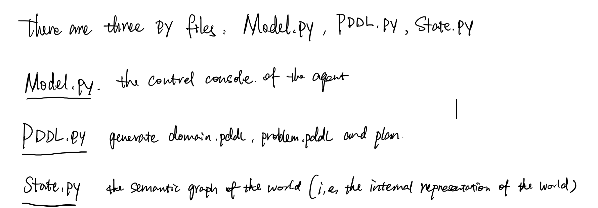
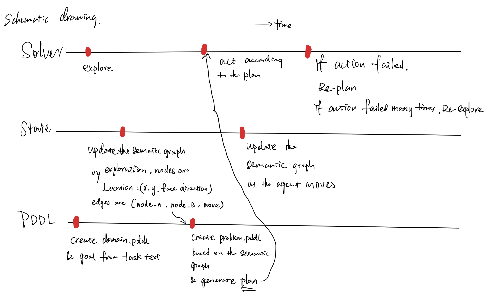
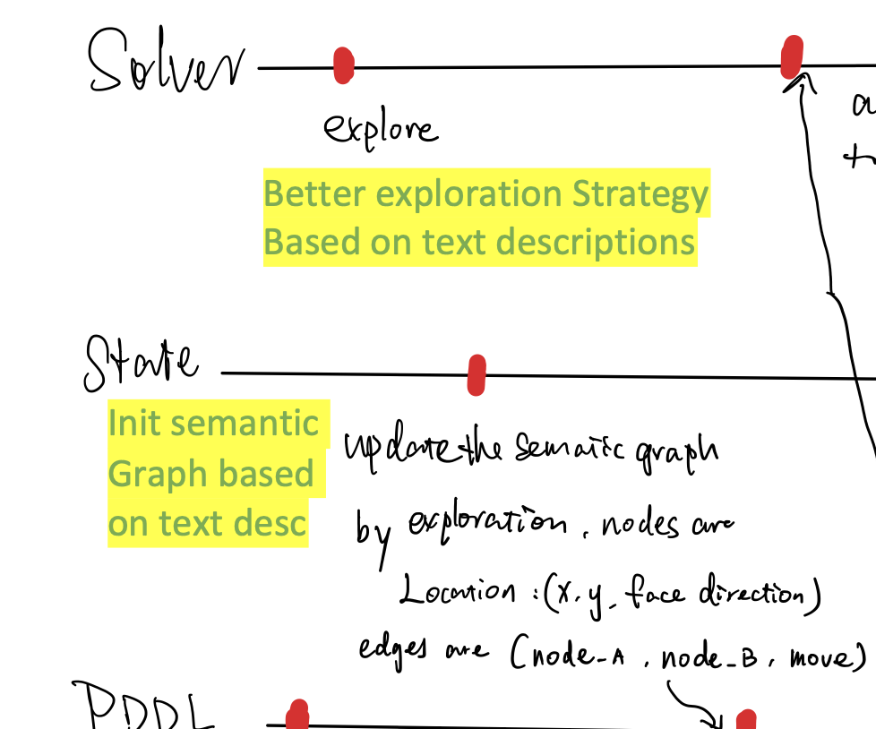
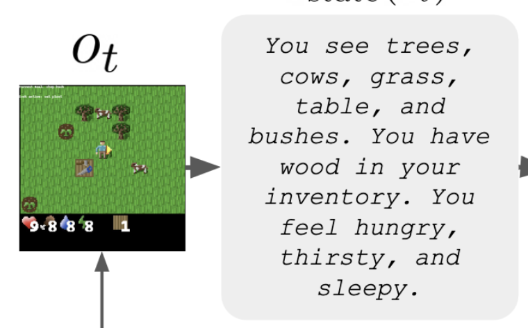
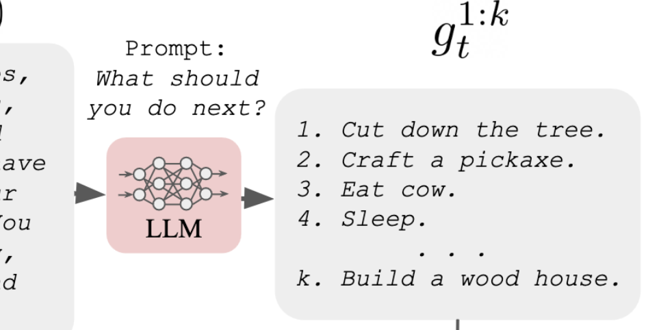
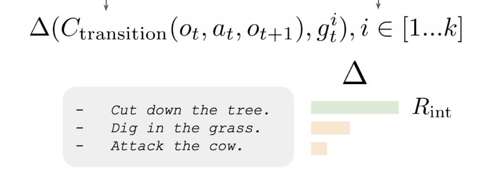
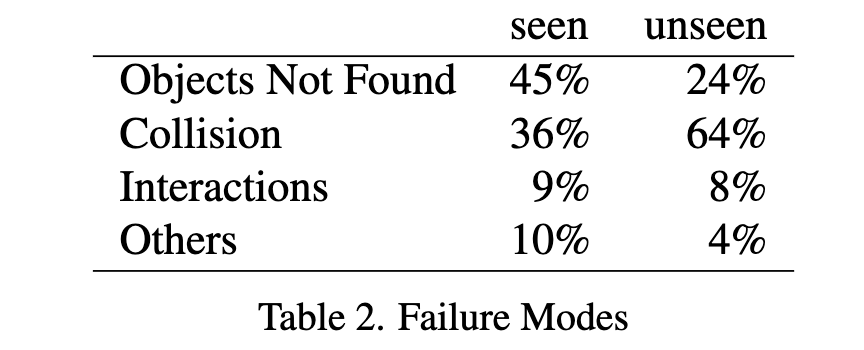
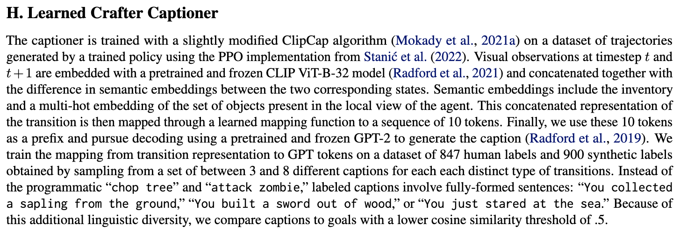
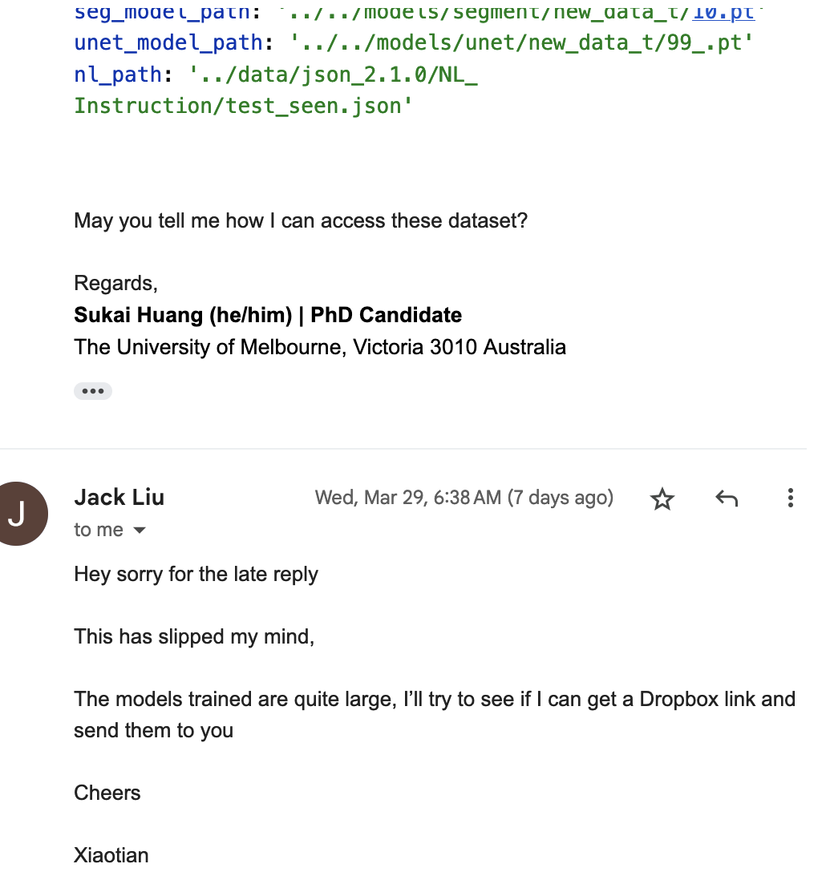

Previous Work Review#
- we continue to understand the code of the ServiceNow model
- last week we briefly understand the whole pipeline of the model
- this week we need to know how the model generate the PDDL domain and problem file.
emnlp 2023 call for papers#

- direct paper submission deadline June 23, 2023
- maybe we can try to get this work done and come up with one paper for emnlp2023
Revise and resubmit Language Reward Shaping paper#
- Shall we submit it to NeurIPS 2023?

You need password to access to the content, go to Slack *#phdsukai to find more.
Part of this article is encrypted with password:
[TOC]
TODO List#
-
understand the ServiceNow’s source code
- understand how they generate PDDL domain and problem file
- try to think about how can we improve the semantic graph design
-
Ask Nir about if we can have ambiguity in the initial state information of the PDDL problem definition.
- also discuss about the contribution of the low-level NL description and the initial exploration to both the PDDL domain and the problem definitions. (this is hard, maybe we do not touch this first, this is semantic parsing stuffs)
-
maybe we can draw a schematic diagram
Understand how they generate PDDL domain and problem file#
I almost understand how they work
-
read this https://tarski.readthedocs.io/en/latest/notebooks/first-order-logics.html . check what is the difference between
init.addandlang.constant -
they have a lot of predefined stuffs so as to generate domain.pddl
-
for problem.pddl, they use the info from the internal representation of the world (i.e., state) collected during exploration and then to generate problem.pddl.
-
the goal is extracted from the goal text. now we have everything and we can plan and execute accordingly
Try to think about how can we improve the semantic graph design#
-
check our guideline
-
I realise that
- once the agent find a plan, it will not update the semantic graph anymore and there will not no re-plan until it find that the too many actions stated in the plan failed.
-
we can modify the pipeline in this way
- we use description info as prior knowledge to generate an biased semantic graph (i.e., the internal state instance) at the beginning.
- then every time we execute an action, we adjust the semantic graph
- but since we update the semantic graph, we have to re-plan in every step.
- but I think “re-plan” will not take too long .
- after re-plan, we execute that action.
-
we also need to come up with a better exploration strategy
- maybe we can train a RL policy as the exploration policy
schematic diagram#


Improvement direction

Concerns regarding to “Init semantic graph based on text desc”#
- we don’t have the training dataset
- first of all, the ServiceNow model’s semantic graph is constructed on the fly – there is no ground truth semantic graph labels.
- if we use the labels from the original training data, we will get the whole map, however, in the task we only concentrate on a part of the map.
- it is not easy to extract the important part from the whole map unless we use human labour.
Concerns regarding to “using text desc to guide exploration”#
-
it seems that using text desc to guide exploration is more feasible.
- There is previous work that tried to use LLMs to guide exploration.
- ref: Exploration with LLMs
- Though our approach is slightly different.
- There is previous work that tried to use LLMs to guide exploration.
-
we can train a RL policy as the exploration policy
- the objective (i.e., reward signals) is the something related to the rate of coverage
-
Previous work (Approach A)
- they need a captioner that can describe the observations

- then based on the descriptions of the observations, we ask the Large Language Model to predict what should we do next.

- the captioner will again generate descriptions for the state transition $(o_t, a_t,o_{t+1})$
- the RL agent will then get auxiliary rewards if the transition state descriptions matches with the predicted next moves descriptions

- By training with this rewards, the RL agent will tend to explore the environment while such an exploration is biased by the common-sense from LLMs.
- Sukai Note: however, even though the author claimed that the reward is used for exploration, this reward actually guides the agent to achieve goals predicted by the LM. Essentially it is also language reward shaping
- they need a captioner that can describe the observations
-
Our approach (Approach B):
- We may still need a captioner that can convert sequences of egocentric observations to descriptions
- we do have the training data
- once we have the captioner, we can describe the exploration behaviour of the agent
- similar to RND, for each episode, we reward the agent if the agent reaches the novel states
- the assumption is as follows: getting novel descriptions -> reaching novel states -> increasing the coverage of the state space -> better exploration
- We may still need a captioner that can convert sequences of egocentric observations to descriptions
-
For our experiment
- we can experiment with both the Approach A and Approach B separately, and after that we can also test Approach A+B and see if it helps more
- the objective can be both the success rate and the “objects not found” rate

- Based on our findings from “pitfalls of LRS”, the pure Approach A may not perform well. If we can approve that, we can also add this result to our “pitfalls of LRS” paper.
trajectory visualisation project#
- well… GPT-4 API is not out yet, we need to wait.
TODO next#
- train the captioner

- run the original ServiceNow model
- we still lack some training data and I have asked them to give me.

Paper Reading Notes#
-
How to talk so AI will learn: Instructions, descriptions, and autonomy
- Author: Theodore R. Sumers et. al.
- Publish Year: NeurIPS 2022
- Review Date: Wed, Mar 15, 2023
-
Deep RL With Hierarchical Action Exploration for Dialogue Generation
- Author: Itsugun Cho et. al.
- Publish Year: 22 Mar 2023
- Review Date: Thu, Mar 30, 2023
-
Learning Generative Models With Goal Conditioned Reinforcement Learning
- Author: Mariana Vargas Vieyra et. al.
- Publish Year: 26 Mar 2023
- Review Date: Thu, Mar 30, 2023
-
Grounded Decoding Guiding Text Generation With Grounded Models for Robot Control
- Author: WenLong Huang et. al.
- Publish Year: 1 Mar, 2023
- Review Date: Thu, Mar 30, 2023
-
A Picture Is Worth a Thousand Words Language Models Plan From Pixels
- Author: Anthony Liu et.al.
- Publish Year: 16 Mar 2023
- Review Date: Mon, Apr 3, 2023
-
How Robust Is GPT 3.5 to Predecessors a Comprehensive Study on Language Understanding Tasks
- Author: Xuanting Chen et. al.
- Publish Year: 2023
- Review Date: Mon, Apr 3, 2023
-
Scaling Expert Language Models With Unsupervised Domain Discovery
- Author: Luke Zettlemoyer et. al.
- Publish Year: 24 Mar, 2023
- Review Date: Mon, Apr 3, 2023
-
Guiding Pretraining in Reinforcement Learning With Large Language Models
- Author: Yuqing De, Jacob Andreas et. al.
- Publish Year: 13 Feb 2023
- Review Date: Wed, Apr 5, 2023
-
Hierarchical Temporal Aware Video Language Pre Training
- Author: Qinghao Ye, Fei Huang et. al.
- Publish Year: 30 Dec 2022
- Review Date: Thu, Apr 6, 2023